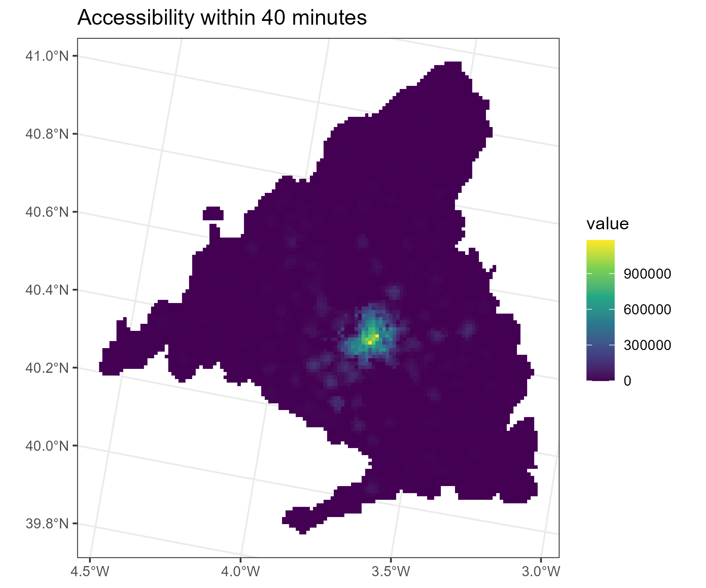

![]()
library(terra)
library(sf)
library(spanishoddata)
library(tidyverse)
library(tidyterra)
library(scales)
library(patchwork)
spod_set_data_dir("data")3b. üìä Tutorial: Accessibility and its Relation to Actual Mobility
Accessibility and its relation to actual mobility
In this part of the tutorial, we want to analyse the relationship between (A) the mobility that is measured in certain places, and (B) the accessibility of these places.
As data on accessibility may naturally come in raster format, we first familiarize ourselves with raster data and common raster operations.
1 Load packages and set data directory
2 MITMS zones
To begin with, load the MITMS zones and filter to Madrid. These zones will be the backbone of this analysis: The spatial units to which we will aggregate and compare accessibility and mobility.
mitms_zones <- spod_get_zones(zones = "districts", ver = 2)
madrid_zones <- mitms_zones |>
filter(luas_mitma == "GAU Madrid")
# Plot the zones
p_distr <-
ggplot(madrid_zones) +
geom_sf(col = "red", fill = "#fff47b") +
theme_bw() +
ggtitle("Madrid zones")
p_distr3 Accessibility data
Secondly, we require information on accessibility.
Accessibility quantifies for a certain location the number of people who can reach it within a certain timeframe. It can be further stratified by demography (total, males or females), mode of transport, and timeframe. For example, the number of male population who can reach a certain location within 40 minutes.
It is, therefore, a result of the distribution of population, transport networks, and people’s ability to use them. Accessibility information is useful for many applications, such as estimating access to resources and opportunities, contextualizing human-level data in an area, and understanding the potential for mobility in that area (Pereira and Herszenhut 2023).
For the purpose of this tutorial, accessibility data for the Madrid area is provided in raster format. The workflow for acquiring and processing this data is documented in the associated github repository.
Tip
We do not cover in this tutorial how to calculate accessibility, but if you are interested, kindly use the awesome “Crash Course on Urban Accessibility with R” by Rafael H. M. Pereira.
3.1 About raster data
Rasters represent geographic information in a regular grid format, where each cell (or pixel) contains a value representing some attribute at that location. In the case of our accessibility data, each raster cell indicates the number of people who can reach the cell within a certain time frame using public transport.
In R, rasters are commonly handled using the terra package, which provides functions for reading, saving, visualizing, and common raster operations.
To learn more about the capabilities of terra, we recommend this guide. About the handling of rasters in general, a useful source is the QGIS documentation.
3.2 Load the accessibility data
We can load the raster, which is stored on the github repository, using the terra::rast() function:
acc <- rast(
"https://github.com/e-kotov/acc-madrid-2025/raw/refs/heads/main/outputs/raster/acc_raster.tif"
)Calling this raster objects reveals some crucial characteristics of the raster, such as:
resolution
extent
coordinate reference system (CRS)
accclass : SpatRaster
size : 137, 127, 18 (nrow, ncol, nlyr)
resolution : 1000, 1000 (x, y)
extent : 3082000, 3209000, 1973000, 2110000 (xmin, xmax, ymin, ymax)
coord. ref. : ETRS89-extended / LAEA Europe (EPSG:3035)
source : acc_raster.tif
names : total_10, total_20, total_30, total_40, total_50, total_60, ...
min values : 0, 0, 0, 0, 0, 0, ...
max values : 43599, 210354, 578168, 1180170, 2007105, 2441784, ... Note the entries in the “names” field. These are the layers of the raster. Rasters often have several layers which match in extent and resolution, but contain different information in the values of the pixels. We can list all layers of the accessibility raster by calling names().
names(acc)[1] "total_10" "total_20" "total_30" "total_40" "total_50" "total_60"
[7] "males_10" "males_20" "males_30" "males_40" "males_50" "males_60"
[13] "females_10" "females_20" "females_30" "females_40" "females_50" "females_60"The names show that the different layers refer to accessibility at different scales (10 minutes, 20 minutes,…) and for different genders (male, female, and total).
Raster layers can be visualized using the plot() function. Additionally, besides the base R plot function, we can also use ggplot2 to visualize rasters. This allows us to conveniently adjust the design and add other ggplot geoms using the ggplot syntax. To visualize rasters in ggplot, we use the geom_spatraster() function from the tidyterra package. Note that we specify the fill aesthetic to correspond to “total_40” which is the layer of the raster we want to visualize.
p_acc <-
ggplot() +
geom_spatraster(data = acc, aes(fill = total_40)) +
scale_fill_viridis_c(na.value = "NA") +
coord_sf() +
labs(title = "Accessibility within 40 minutes", "by public transport") +
theme_bw()
p_acc
3.3 Optional: Cropping and masking rasters
Rasters can be cropped and masked to focus on a specific area of interest. Cropping reduces the extent of the raster to a specified bounding box, while masking removes values outside a specified polygon.
This is useful when working with large rasters that cover a wide area, but you are only interested in a smaller region, such as the Madrid metropolitan area. Firstly, it speeds up processing, and secondly, it improves visualization.
To illustrate this, we will crop and mask our accessibility raster to the extent of the zones. To do this, the coordinate reference system (CRS) of the raster and the vector data must match. The st_transform() function from the sf package is used to transform the CRS of the vector data to match that of the raster.
# Transform the CRS of the madrid zones to match the CRS of the accessibility raster
madrid_zones <-
madrid_zones |>
st_transform(crs(acc))
# Crop and mask the raster using the madrid zones
acc_cropped <- crop(acc, madrid_zones)
acc_masked <- mask(acc, madrid_zones)
acc_cropped_masked <- mask(acc_cropped, madrid_zones)The code chunk below illustrates the effect of cropping and masking on the accessibility raster.
library(patchwork)
p_uncropped <-
ggplot() +
geom_spatraster(data = acc, aes(fill = total_40)) +
scale_fill_viridis_c(na.value = "NA") +
geom_sf(data = madrid_zones, fill = NA, color = "red") +
theme_bw() +
ggtitle("Original")
p_cropped <-
ggplot() +
geom_spatraster(data = acc_cropped, aes(fill = total_40)) +
scale_fill_viridis_c(na.value = "NA") +
geom_sf(data = madrid_zones, fill = NA, color = "red") +
theme_bw() +
ggtitle("Cropped")
p_masked <-
ggplot() +
geom_spatraster(data = acc_masked, aes(fill = total_40)) +
scale_fill_viridis_c(na.value = "NA") +
geom_sf(data = madrid_zones, fill = NA, color = "red") +
theme_bw() +
ggtitle("Masked")
p_cropped_masked <-
ggplot() +
geom_spatraster(data = acc_cropped_masked, aes(fill = total_40)) +
scale_fill_viridis_c(na.value = "NA") +
geom_sf(data = madrid_zones, fill = NA, color = "red") +
theme_bw() +
ggtitle("Cropped & Masked")
p_combined <-
((p_uncropped | p_cropped) / (p_masked | p_cropped_masked)) &
theme(legend.position = "none")
p_combined3.4 Optional: Raster calculations
It is also possible to perform calculations on rasters (raster algebra) in which case the output is a new raster object.
As an example (not necessary for our main goal) we can calculate the log gender ratio of the accessibility. To do this, we apply several operations using the original raster layers males_40 and females_40 as inputs.
# calculate the log of the gender ratio
log_gender_ratio <- log(
(1 + acc_cropped_masked$males_40) / (1 + acc_cropped_masked$females_40)
)The output is a new raster object, which we can use by itself, or add as a new layer to the original raster.
# This raster can also be added as a layer to the original raster
acc_cropped_masked$log_gender_ratio <- log_gender_ratioWe can also visualize it.
# Visualise the created raster
p_ratio <-
ggplot() +
geom_spatraster(data = acc_cropped_masked, aes(fill = log_gender_ratio)) +
scale_fill_gradient2(
"Log Gender Ratio",
high = "orange",
low = "cornflowerblue",
midpoint = 0,
mid = "gray90",
na.value = "NA"
) +
theme_bw()
p_ratio3.5 Find median accessibility per MITMS zone
Rasters are regular and do not conform to the boundaries of administrative units. The flow data, however, is aggregated to the MITMS zones, and this is also the level at which we want to conduct our analysis.
For this analysis, we therefore want to compute the accessibility at zone level - meaning that we are taking our accessibility data from raster to vector level.
One way of doing this is by using the terra::extract() function, which extracts values from a raster at specified locations (polygons of MITMS zones, in this case). Note that we specify to use the median as the aggregation function fun (fun = median). If you are interested, you can check the documentation of extract() to see which other functions are possible.
madrid_with_acc <- terra::extract(
acc_cropped_masked,
madrid_zones |> select(id, name, population),
fun = median,
na.rm = TRUE,
bind = TRUE
) |>
st_as_sf()p_acc_agg <-
madrid_with_acc |>
ggplot() +
geom_sf(aes(fill = total_40 + 0.1)) +
scale_fill_viridis_c(
trans = "log10",
breaks = trans_breaks("log10", function(x) 10^x),
labels = function(x) {
# for the minimum break, set to 0; otherwise keep the true value
x_adj <- ifelse(x == min(x), 0, x)
label_comma()(x_adj)
},
guide = guide_colorbar(
title.position = "top",
barwidth = unit(0.5, "cm"),
barheight = unit(5, "cm")
)
) +
labs(
title = "Median accessibility per MITMS zone",
fill = "Accessibility\n(Number of people\nwithin 40 minutes,\npublic transport)\n(log10 scale,\nbut real values in labels)",
) +
theme_bw()
p_acc_agg4 Mobility data
We also need to prepare the mobility data. By now, we know to use spod_get() to achieve this. We load the mobility data at zone level for a single day.
If you are using our provided Binder container in a web browser to follow the tutorial, do not try to analyze more than 2 days at once, as it will likely crash the instance. In this case, even the magic of DuckDB does not help overcome the 2GB memory limit. If you computer has 4-8 GB of RAM, you should be good to go.
If you are using our pre-converted data from SSD
If you are using the files copied from the SSD passed around during the workshop (kindly, remember to return it), you can instead use spod_connect() function to load the pre-converted data in DuckDB format that is optimized for speed. In this case you will be able to quickly analyze multiple dates available in respective folders of the SSD. Open the *.Rproj file in the root of the folder you copied and see some starter code in start-here.R to point the spod_connect() towards a *.duckdb file.
| Folder | Dates |
|---|---|
| 5GB_2023_15-aug-15-sep_od_distr | 15 August — 15 September 2023 |
| 10GB_2023_aug-sep_od_distr | 1 August — 30 September 2023 |
| 15GB_2023_jul-aug-sep_od_distr | 1 July — 30 September 2023 |
| 60GB_2023_od_distr | 1 January — 31 December 2023 |
dates <- c("2024-05-09")
flows <- spod_get(
type = "origin-destination",
zones = "districts",
dates = dates
)As we want to focus the analysis on Madrid, we only select the flows for zones in Madrid (selected above), and summarize the connections between pairs of zones.
flows_madrid <- flows |>
filter(
id_origin %in% madrid_zones$id,
id_destination %in% madrid_zones$id
) |>
group_by(
id_origin,
id_destination
) |>
summarise(
n_trips = sum(n_trips, na.rm = TRUE),
.groups = "drop"
) |>
collect()We can take a look at the first few rows of the flows data to understand its structure.
flows_madrid |>
arrange(-n_trips) |>
head()# A tibble: 6 × 3
id_origin id_destination n_trips
<fct> <fct> <dbl>
1 2807908 2807908 418793.
2 2807916 2807916 300991.
3 2807911 2807911 283561.
4 2807913 2807913 250189.
5 2807910 2807910 204519.
6 28106 28106 203045.5 Analysis: Compare accessibility to mobility
Now it is time for the actual analysis. One simple research question could be:
Does better accessibility mean more incoming trips?
5.1 Calculate incoming flows for each zone
To answer this question, we aggregate all incoming trips per zone, using the summarise() function on a dataframe grouped by (destination) zone.
incoming_flows <-
flows_madrid |>
group_by(id_destination) |>
summarise(
n_trips = sum(n_trips, na.rm = TRUE),
.groups = "drop"
) |>
rename(id = id_destination)5.2 Compare incoming flows to accessibility
We then use a left_join() to combine the accessibility data with the incoming flows data. This allows us to compare the number of incoming trips to the accessibility values for each zone.
madrid_acc_vs_incoming_flows <-
madrid_with_acc |>
left_join(incoming_flows, by = "id") |>
mutate(
n_trips = replace_na(n_trips, 0),
acc_per_trip = total_40 / n_trips
)head(madrid_acc_vs_incoming_flows, 3)Simple feature collection with 110 features and 24 fields
Geometry type: POLYGON
Dimension: XY
Bounding box: xmin: 3129032 ymin: 2011345 xmax: 3189834 ymax: 2042368
Projected CRS: ETRS89-extended / LAEA Europe
id name population total_10 total_20 total_30 total_40
1 28002 Ajalvir 4676 0 0.0 389 746
2 28004 Álamo, El 9908 0 0.5 1305 3611
3 2800501 Alcalá de Henares distrito 01 31061 18663 21148.0 88021 123321
total_50 total_60 males_10 males_20 males_30 males_40 males_50 males_60 females_10
1 4795 5593.0 0 0 185 388.0 2507.0 2888.0 0
2 6852 9656.5 0 0 652 1761.5 3453.5 4800.5 0
3 169026 173764.0 8954 10098 42186 59361.0 81802.0 84076.0 9714
females_20 females_30 females_40 females_50 females_60 log_gender_ratio n_trips
1 0 207 358 2290.0 2703 0.08025696 25838.59
2 0 653 1848 3397.5 4852 -0.01009685 17599.04
3 11049 45839 63968 87233.0 89703 -0.07474430 102803.92
geometry acc_per_trip
1 POLYGON ((3179265 2041811, ... 0.02887154
2 POLYGON ((3133896 2014643, ... 0.20518168
3 POLYGON ((3189071 2031143, ... 1.199574935.3 Visual analysis: Scatterplot
To test for an overall relationship between accessibility (acc_per_trip) and incoming flows (n_trips), we can use a scatter plot. Because of the large population differences between zone, we use a log scale for both axes. This allows us to visualize the relationship more clearly.
p_compr <-
ggplot(madrid_acc_vs_incoming_flows, aes(x = total_40, y = n_trips)) +
geom_point(alpha = 0.6) +
geom_smooth(method = "lm", color = "blue", se = FALSE) +
scale_x_log10(
breaks = trans_breaks("log10", function(x) 10^x),
labels = label_comma(),
minor_breaks = NULL
) +
scale_y_log10(
breaks = trans_breaks("log10", function(x) 10^x),
labels = label_comma(),
minor_breaks = NULL
) +
annotation_logticks(sides = "bl") +
theme_bw(base_size = 12) +
theme(
axis.title = element_text(face = "bold"),
axis.text = element_text(color = "gray20")
) +
labs(
title = "Accessibility vs Incoming Flows",
x = "Accessibility (people within 40 min using public transport)",
y = "Incoming flows (number of trips)"
)
p_comprVisually, it seems there is a relationship, but it is quite weak.
5.4 Visual analysis: Map
Note that the madrid_acc_vs_incoming_flows (the object holding the zones and the aggregated flows and accessibility values) still also has a geometry column, making it a spatial object capable of spatial operations and visualizations. This allows us to, for example, visualize the ratio of trips versus the accessibility. Are there any spatial patterns?
p_compr_spatial <-
ggplot(madrid_acc_vs_incoming_flows) +
geom_sf(aes(fill = acc_per_trip), col = "NA") +
scale_fill_gradient(
"Accessibility\nper trip",
low = "blue",
high = "red",
na.value = "NA",
trans = "sqrt"
) +
theme_bw() +
ggtitle("Accessibility versus incoming flows")
p_compr_spatialSuch a spatial visualization allows us to identify spatial patterns and outliers. In other words, they allow us to see the spatial aspect of relationships between variables. In practice, it is always a good idea to use both spatial and non-spatial visualizations.
6 Suggested tasks for hands-on practice
Now you are free to experiment and test your own hypotheses! Here are some suggestions:
Go back to where we load the flows data and try to filter to only specific time of day or trip types (e.g. to avoid potential return trips).
Compare mobility with the accessibility within other time intervals, see which gives the best fit.
Apply statistical tests for the relationships (e.g., using
cor.test()or “a new coefficient of correlation” (Chatterjee 2021) with{XICOR})
Tip
Feel free to consult any LLM you prefer for code examples. You can also use the {rdocdump} R package to export all documentation and vignettes from {spanishoddata} or other packages into a single text file—and then feed that to your model for richer code suggestions. This helps a lot for the packages that are newer then the model training cut-off date, or the ones that were recently updated with new features.
Quick Start: rdocdump
# Install
install.packages("rdocdump")
# Dump spanishoddata docs + vignettes to TXT
rdocdump::rdd_to_txt(
pkg = "spanishoddata",
file = "spanishoddata_docs.txt",
content = c("docs", "vignettes"),
force_fetch = TRUE,
keep_files = "none"
)Now just attach the spanishoddata_docs.txt file saved into the current project/working directory to your LLM prompt and ask for code examples using the data from the package.
References
Chatterjee, Sourav. 2021. “A New Coefficient of Correlation.” Journal of the American Statistical Association 116 (536): 2009–22. https://doi.org/10.1080/01621459.2020.1758115.
Pereira, Rafael H. M., and Daniel Herszenhut. 2023. “Introduction to Urban Accessibility : A Practical Guide with r,” December. https://doi.org/10.38116/9786556350653.
Citation
BibTeX citation:
@online{kotov2025,
author = {Kotov, Egor and Mast, Johannes},
title = {IC2S2 2025 {Workshop:} {Mobility} {Flows} and {Accessibility}
{Using} {R} and {Big} {Open} {Data}},
date = {2025-07-21},
url = {https://e-kotov.github.io/spanish-open-mobility-workshop-ic2s2-2025/3-accessibility-vs-mobility-tutorial.html},
doi = {10.5281/zenodo.16238597},
langid = {en}
}
For attribution, please cite this work as:
Kotov, Egor, and Johannes Mast. 2025. “IC2S2 2025 Workshop:
Mobility Flows and Accessibility Using R and Big Open Data.” July
21, 2025. https://doi.org/10.5281/zenodo.16238597.